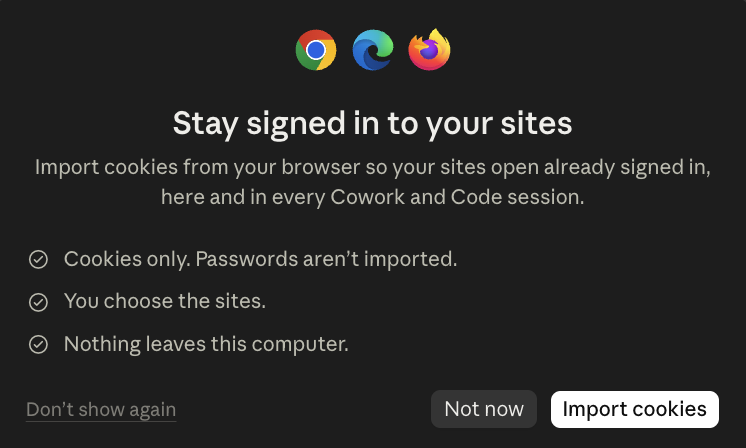

Claude 桌面版最近出現一個新介面：可以從瀏覽器挑選網站，把 Cookie 匯入 Claude 內建的瀏覽器，讓 Claude 打開這些網站時延續原本的登入狀態。另一條正在成形的路線，是讓網站主動把搜尋、填表、預約等功能註冊成 AI 可呼叫的工具。這篇拆成兩大方向、三個落點來看，並釐清 WebMCP、ChatGPT Apps＋MCP 各自的規格歸屬。
- 已經有個人網站、知識官網或內容網站，想知道 AI 時代要改什麼的人
- 希望自己的文章被 ChatGPT、Claude、Perplexity 等 AI 找到、整理或引用的內容創作者
- 想把網站往線上知識庫、AI 客服或微型 Agent 應用推進，但還不知道從哪一層開始的人
- 看懂網站 AI 化的兩大方向，以及 Claude 瀏覽器、WebMCP、ChatGPT Apps＋MCP 三個落點
- 分清楚 SEO、AIO、GEO 與我在 4O 裡所說的 AXO 各自處理哪一層
- 一份可以直接盤點自己網站的三層改造清單與提示詞
一個 Cookie 匯入畫面，透露了網站正在改變
我在 Claude 桌面版看到一個新介面。
它先問我要不要從瀏覽器匯入 Cookie，讓網站在 Claude 的內建瀏覽器裡保持登入。這個畫面列出三件事：只匯入 Cookie，不匯入密碼；網站由使用者自己挑；資料不會離開這台電腦。

下一個畫面會列出瀏覽器裡有 Cookie 的網站，讓使用者逐站選擇。銀行、付款、電子郵件與登入服務會被特別標示，並預設不勾選。
第一張畫面另外寫明，匯入之後這些登入狀態會套用到後續每一個 Cowork 與 Code 工作階段。Anthropic 的支援文件則補充，這個內建瀏覽器和使用者原本的瀏覽器分開，登入狀態留在這台電腦，Claude 只有在你主動選擇匯入時才會取得。
這件事的意義，不只是在少輸入幾次帳號密碼。
過去 AI 逛網站時，常常停在公開頁面。它看得到官網首頁，卻進不了你的後台、會員頁、專案系統或已登入的 SaaS。Cookie 匯入之後，AI 可以在你授權的網站裡延續既有工作情境。它看到的頁面，更接近你平常工作時看到的頁面。
這是一條很直接的路線：網站本身不一定要改，先讓 AI 帶著使用者的登入狀態進去操作。
第一條路線：讓 AI 帶著你的身分逛網站
這條路線解決的是「AI 怎麼進得去」。
網站原本就有給人使用的介面。AI 進去之後，仍然透過頁面、按鈕、表單與選單工作，只是多了可以延續登入狀態的能力。
適合的情境包括：
- 進入已登入的內容平台，整理自己的文章或後台資料
- 進入專案工具，讀取目前狀態並協助更新
- 進入會員型服務，取得使用者已被授權看到的內容
- 在多個網站之間完成原本需要人反覆切換的工作
它的優點是網站不用先重做。只要原本的人類介面可以操作，瀏覽器 Agent 就有機會使用。
限制也很明確。AI 仍要理解畫面，判斷哪個按鈕該按、哪個欄位該填。網站改版、彈出視窗、模糊的按鈕命名，都可能讓操作變得不穩定。登入狀態也會過期，雙重驗證與風險檢查仍然存在。
- 桌面版和開發者版差在哪？：網頁聊天型 AI 與桌面幹活型 AI 的分界（Codex） 這篇拆解網頁聊天型 AI 跟桌面幹活型 AI 的分界，跟 Claude 帶著登入狀態逛網站是同一組能力光譜的兩端
第二條路線：網站把功能直接註冊給 AI
另一條路線解決的是「AI 進來以後，怎麼更可靠地做事」。先說清楚現況：WebMCP 目前是規格提案，還沒有成為普及標準。下面的例子是在說明設計方向，並非今天打開所有瀏覽器都能直接使用的功能。
WebMCP 的概念，是讓網站把現有功能包成有名稱、說明與輸入格式的工具。例如：
search_articles：依問題或主題搜尋文章filter_courses：依日期、程度與主題篩選課程book_slot：把使用者選好的時段帶入預約流程run_diagnostics：在系統裡執行一組明確的檢查
AI 不必只靠看畫面猜按鈕用途。網站會把「這個功能做什麼、需要哪些參數、回傳什麼結果」說清楚，再由瀏覽器居中協調工具呼叫。
依目前 WebMCP 草案，網站可以透過 JavaScript 的 document.modelContext.registerTool() 註冊工具，也可以在 HTML 表單上加入宣告式標記。早期文件曾使用 navigator.modelContext，草案期間名稱已經變動過，實作前仍要核對當日版本。這讓同一份網站功能可以繼續給人操作，同時提供更結構化的入口給 AI Agent。
先修正一個容易混在一起的說法
WebMCP 並非 ChatGPT 推出的協議。
目前 WebMCP 草案的編輯來自 Microsoft 與 Google，規格文件由 W3C 旗下的 Web Machine Learning Community Group 發布。OpenAI 並非這份規格的推出者，但 ChatGPT 桌面版已透過 Site tools 採用 WebMCP。OpenAI 同時也推進另一條 Apps SDK 與 MCP 應用路線，讓開發者建立可以在 ChatGPT 裡運作的應用。
後兩個落點都屬於「網站或服務主動提供 AI 介面」這個大方向，但功能所在位置與連接方式不同：
| 路線 | 功能放在哪裡 | AI 怎麼取得 | 現階段代表 |
|---|---|---|---|
| 帶著登入狀態逛網站 | 既有人類網頁介面 | AI 在瀏覽器裡看頁面、點擊、輸入 | Claude Cowork 內建瀏覽器、Claude in Chrome |
| WebMCP | 當前網頁的前端功能 | 網頁向瀏覽器註冊結構化工具 | W3C 社群草案、Chrome 實驗、ChatGPT Site tools |
| ChatGPT Apps＋MCP | 網站或服務的遠端後端能力 | ChatGPT 連接 MCP 應用與工具 | OpenAI Apps SDK、ChatGPT Developer Mode |
兩大方向的分工因此很清楚：一條是 AI 去適應既有網站，另一條是網站主動提供 AI 介面。容易混淆的是規格名稱與產品歸屬。WebMCP 與 ChatGPT Apps 位在不同技術層，看到「網站給 AI 用」就把它們當成同一件事，會判斷錯投入方向。
從 SEO、AIO、GEO 走到 AXO
我把網站在 AI 時代要處理的工作，整理成 4O：
| 層次 | 要解決的問題 | 網站要準備什麼 |
|---|---|---|
| SEO | 人能不能在搜尋引擎找到你 | 可索引頁面、清楚標題、穩定網址、內部連結 |
| AIO | AI 能不能把你的內容整理成答案 | 問題導向結構、直接回答、表格、清單、可核對資料 |
| GEO | 生成式 AI 願不願意提及或引用你的觀點 | 原創觀點、清楚署名、來源、可信度、跨站識別 |
| AXO | AI Agent 能不能讀懂、調用並完成事情 | 工具、權限、輸入輸出格式、確認機制、行為護欄 |
4O 是我用來規劃網站的工作框架。AXO 在這裡指 Agent Experience Optimization，也就是網站如何提供 AI Agent 可理解、可調用、可控管的使用體驗。
AIO 與 GEO 關心內容能不能進入 AI 的回答。AXO 再往前一步，關心 AI 能不能在你的網站裡完成一件事。
例如，一篇「如何建立個人知識庫」的文章，經過 AIO 與 GEO 優化後，AI 比較容易讀懂文章在回答什麼，也比較容易在相關問題裡引用。到了 AXO，網站還可以提供 search_articles、build_learning_path 等工具，讓訪客的 AI 依照他的程度與目標，從你的文章庫裡組出一條閱讀路線。
- 網路上一半以上的訪問已經不是人了，你的內容準備好被機器讀了嗎？ 這篇講機器人流量超過真人這件事對網站經濟模式的衝擊，是 4O 這套框架要處理的大背景
網站可以重新想成三層
第一層：給人看的曝光頁面
這一層保留網站原本的角色。讀者可以認識你、閱讀文章、看服務、看案例，也能判斷要不要繼續接觸。
這一層先把 SEO 與基本可讀性做好。重要內容放進伺服器直接回傳的 HTML，標題層級清楚，每篇文章有穩定網址、摘要、作者、更新日期與來源。
第二層：線上的知識庫
網站不只陳列文章，也要讓人與 AI 都能快速找到正確內容。
可以先做：
- 文章索引與主題分類
- 每篇文章的摘要、適用對象與可帶走成果
- 同義詞與讀者常用問法
- 穩定的文章識別字與更新日期
- 文章之間的延伸閱讀與來源連結
- 站內搜尋紀錄，用來找出讀者一直找不到的問題
這些工作還沒有碰到複雜 Agent，就已經能同時改善人類搜尋、AIO 與 GEO。
第三層：線上的微型 Agent 應用
當知識層穩定之後，網站可以挑一件高頻、低風險的事，做成 AI 可呼叫的功能。
以我的知識網站為例，第一批功能可以是：
search_articles(query)：依讀者的問題找出相關文章get_article(slug)：回傳文章摘要、來源、更新日期與網址build_learning_path(goal, level)：依目標與程度組出閱讀順序
這三個都以讀取與整理為主，風險比發文、刪除、付款、寄信或建立正式預約低。等工具的輸入、輸出與錯誤情境都跑穩，再考慮加入會改變外部狀態的功能。
別急著把整個網站都做成 Agent
網站要對 AI 開放功能時，最容易犯的錯，是一次註冊太多工具。
工具越多，AI 越需要判斷該用哪一個；名稱與說明越模糊，誤用機率越高。涉及寫入、付款、發送與刪除的工具，也會把安全問題放大。
比較穩的順序是：
不要一開始就想覆蓋所有功能。
回傳來源與更新日期，風險最低。
用途、格式與必要條件都要交代。
找不到、資料過期、權限不足都要有明確狀態。
確認 AI 會在對的情境呼叫工具。
需要改變狀態的動作，保留使用者確認與操作紀錄。
我現在會怎麼應用
如果目標是讓 AI 讀懂我的文章，並在別人問問題時引用到我，我會先完成前兩層：
- 把文章寫成直接回答問題的結構
- 每篇都有清楚摘要、適合誰、讀者能得到什麼
- 把原創方法、案例、來源與更新日期交代清楚
- 建立穩定的文章索引、內部連結與主題頁
- 用讀者真正會問的句子補搜尋別名
這是 AIO 與 GEO 的主場。
接著，再挑一個最能代表網站價值的動作做 AXO。我的第一個候選會是「依問題找文章並組閱讀路線」，因為它能直接使用既有知識資產，也不必一開始就碰高風險寫入權限。
等這條路徑跑穩，網站才會從文章集合，慢慢長成一個能被 AI 使用的知識服務。
- AI 代理要接手工作了，你的流程和知識準備好了嗎？ 這篇講 AI 代理彼此協作的 A2A 協議，是網站三層改造之後，工具還可能往哪裡延伸的下一步
一份可以直接拿去盤點網站的提示詞
把下面這段貼給 AI，換成你自己的網站資訊即可開始。
請把我的網站當成「同時給人與 AI 使用的知識服務」來盤點。
網站網址或內容：【貼上】
主要讀者：【填寫】
我最希望讀者完成的三件事：【填寫】
請分成三層檢查：
1. 曝光頁面：人是否能快速理解我是誰、這裡有什麼、下一步去哪裡。
2. 線上知識庫：文章是否有穩定網址、摘要、適用對象、更新日期、來源、主題分類、延伸閱讀與可搜尋別名。
3. 微型 Agent 應用：列出 3 個適合做成 AI 工具的高頻任務，為每個工具寫名稱、用途、輸入、輸出、權限、錯誤情境與是否需要人工確認。
最後請分成：
- 現在就能做
- 需要整理資料後再做
- 涉及登入、個資、付款、發送或刪除，暫時不要做
不要保證能被 AI 引用。所有推論要標示依據，缺資料就列出待補項目。最後真正要改的，是網站對「使用者」的定義
以前我們做網站，腦中想的是訪客會怎麼看、怎麼點、怎麼填表。
現在要多問一層：如果訪客帶著自己的 AI 來，這個 AI 看得懂我的內容嗎？找得到可靠來源嗎？知道哪些功能可以用嗎？遇到高風險動作時，會把控制權交還給人嗎？
Claude 的 Cookie 匯入，讓 AI 更容易進入既有網站。WebMCP 與 ChatGPT Apps＋MCP，則分別從網頁前端與服務端，讓網站與服務開始主動說明自己能做什麼。
這兩大方向、三個落點最後會在同一個地方交會：網站除了是給人看的頁面，也會成為線上的知識庫，以及一個有清楚權限與行為邊界的微型 Agent 應用。
我是江江教練
隱性知識提煉師、AI 應用規劃師
對 AI × 知識管理、隱性知識提煉有興趣？歡迎加入我的 LINE 社群。我每月固定舉辦兩場免費線上講座，分享實戰經驗與方法論。如果你對這些主題感興趣，想持續學習，或是有顧問需求，都歡迎先從社群開始。
主要討論：
🔸 善用 AI 作為思考夥伴，提升決策品質與思考深度。
🔸 把知識、經驗，整理成提示詞、技能包、知識庫，讓 AI 能靈活運用。
每月兩場免費線上講座，分享實戰經驗與方法論。
前往 LINE 社群 ↗